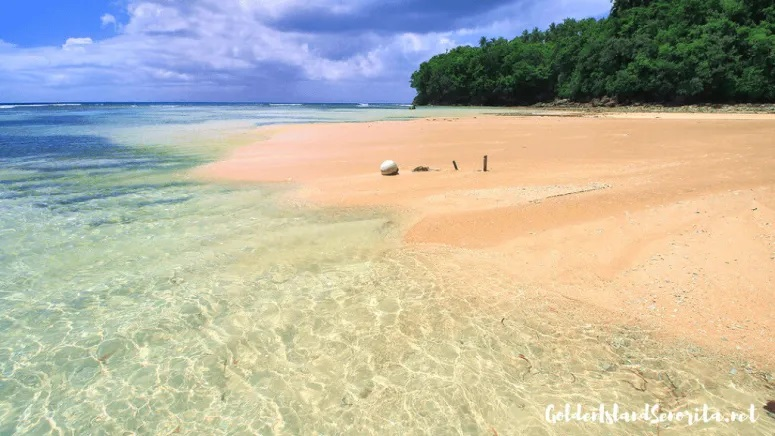

Top 5 Destinations By Regions
Bonuan Blue Beach in Ilocos Region

Bonuan blue beach-Bonuan Blue Beach or commonly known as Tondaligan Beach is located at Bonuan Tondaligan, Dagupan City. It is one of the most popular beaches here in Pangasinan. Most of us already heard some negative comments about this beach. But hey! The beach has been rehabilitated and now it is different from the Bonuan Blue Beach that is on our mind. This place is a good place for picnics and relaxation. It is clean and well-organized. There is a children’s park that kids will surely love. It’s just a minutes away from the city proper. See more in Ilocos Region
Dicotcotan Beach in Cagayan Valley Region
.jpeg)

Dicotcotan beach-Dicotcotan Beach boasts of a three-kilometer long beach with coral reefs, sea grass beds and sandy shoreline that is fringed with a coastal forest and a village.
See more in Cagayan Valley Region
Dinadiawan Beach in Central Luzon Region

.jpeg)
Dinadiawan beach-Going to this beach is so much fun. The ride was very exciting, I got to see a different side of Aurora Province.
It’s very pronvincey and has a laid back vibe.
I would suggest to visit Dinadiawan Beach after visiting Baler. There are more things to see in Aurora Province so better explore.
See more in Central Luzon Region
Masasa Beach in Calabarzon Region
.jpeg)
.jpeg)
Masasa beach-Masasa Beach is arguably the best beach in Tingloy, the only municipality in Batangas that is not on mainland Luzon.
Its main island is the fish-shaped Maricaban, off the tip of Calumpang Peninsula separating Balayan Bay from Batangas Bay.
See more in Calabarzon Region
Secret Lagoon Beach in MIMOROPA Region


Secret Lagoon Beach - It’s no secret that El Nido has been blessed with more than its fair share of postcard perfect scenic locations. From majestic limestone formation jutting out from crystal clear turquoise seas to powdery white sandy beaches along its coastlines, not to mention the sheer diversity of marine wildlife in its perfectly hued oceans, it’s no wonder foreign publications have declared it the best beach and island destination in the Philippines. As soon as your boat docks near the lagoon, your guide will direct you to a small opening hidden between a towering wall of limestone rocks by the seashore. It’s easy to miss this secret spot, and most people wonder if it’s possible to crawl through this tiny hole.
But once you get through it, you’ll be greeted by an unusual sight: a massive limestone rock formation surrounding a small body of water right in the middle of it. Enclosed within a lagoon and eclipsed by towering rocks all around you, this awe-inspiring scenery lends an otherworldly experience for visitors.
Depending on where your boat is parked, you’ll find more secret coves and hidden white sand beaches in the areas surrounding the secret lagoon. Take your time look around beyond the tiny opening to the secret lagoon, and you’ll be rewarded with more spectacular nooks and crannies waiting to be discovered.
How to get thereLocated among the many islets dotting the majestic Bacuit Bay in El Nido, the lagoon is situated on the southern part of Miniloc island. It takes some effort to get there - aside from having to ride an outrigger boat to reach it, be prepared to get wet and to step on some sharp rocks, so put on some aqua shoes for good measure. See more in MIMOROPA Region
Mamangal Beach in Bicol Region

Mamangal Beach - The Mamangal Beach is situated at Barangay Balite in the town of Virac, Catanduanes. Sunny and perpetual shorelines anticipate in the area of Catanduanes, which is the reason it is turning into the following top get-away spot by regional standards and past. One of these is Mamangal Beach, an incredible area with shining blue water and perpetual white sand. The entire stretch of Mamangal keeps on astonishing guests with its pristine magnificence – a benefit which local people inside of the range monitor fanatically.
The sprawling shoreline is secured with the cool and shady trees and favored with fine white sands, both in the shorelines and in the swimming range. Crystalline waters flourish with common and brilliant reefs where a major number of animal varieties swarm in multi-hued scene. This beach is ideal for people who likes Skim Boarding.
The shoreline is specked with palms and different trees where local people go through their weekends with their families. The sands are white, and the shorelines crisply lined with cool and sandy trees. Structures and sheds are additionally built to oblige swimmers. The shoreline gives an option range to diversion, fun, unwinding, and exceptionally perfect for weekend picnics and skim boarding. See more in Bicol Region
San Agustin Church and Museum in National Capital Region


San Agustin Church and Museum-As a designated UNESCO World Heritage site, the San Agustin Church is a national treasure in the Philippines. The Catholic Church has a unique history that is reflected in the details of the building. If you look closely, you will see both Chinese and Spanish influences in the design.
The church has been rebuilt several times after battles and natural disasters.
Pay close attention to the carvings on the large wooden doors that open to the chapel. If you have an interest in history or architecture, it would be worth your time to hire a local guide who can take you on a walking tour of the area and describe intricate details of the church that you may not notice on your own.
Address: Gen Luna & Real Streets, Intramuros, Manila, Luzon 1002
See more in San Agustin Church and Museum
Strawberry Farm in Cordeliera Administrative Region


Strawberry Farm-The La Trinidad Strawberry Farm is a farm in the town of La Trinidad, Benguet, Philippines primarily used for the cultivation of strawberries. This is where local filipinos and foreigners get to experience eating & picking fresh strawberries & vegetables.
Come with me and witness the magnificent La Trinidad Strawberry farm where you will enjoy seeing planted fresh vegetables such as lettuce, strawberries and many more! I was amazed by this place and appreciated our farmers even more for doing such a hard work to make sure we have nice fresh vegetables and fruits on our table!! It’s my pleasure to talk to some farmers and I was also able to try their famous REAL STRAWBEERY ICECREAM!!
Located at : La Trinidad Benguet , Baguio Philippines
See more in Strawberry Farm